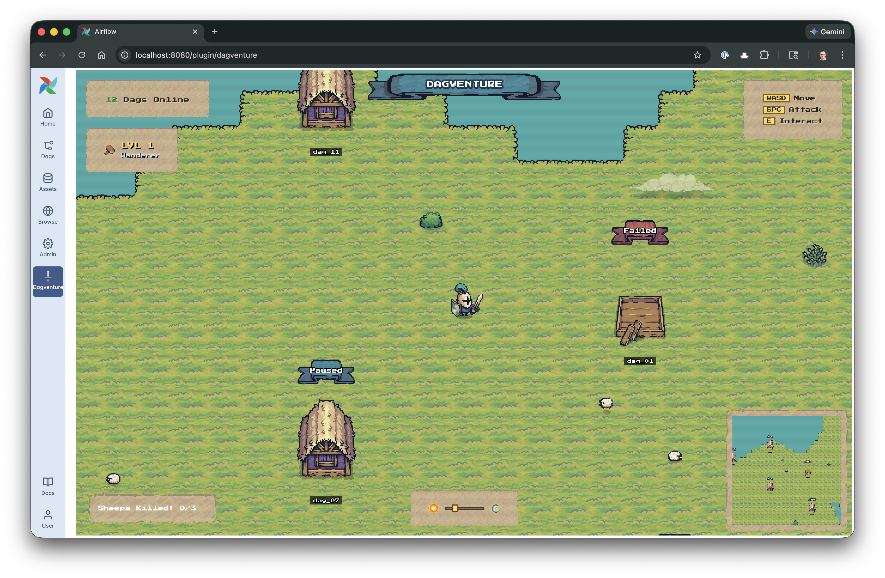
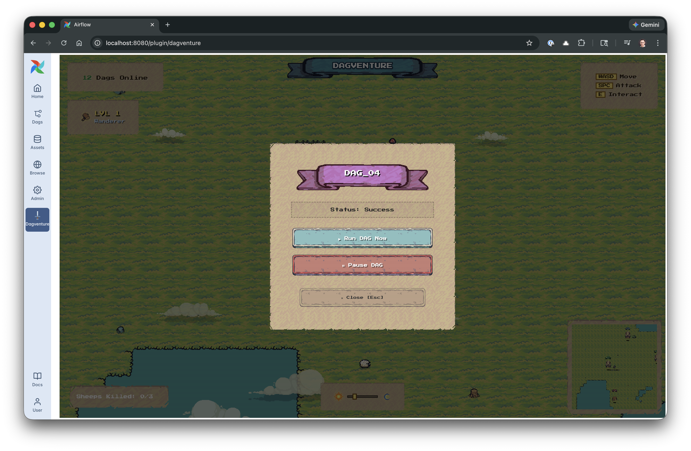
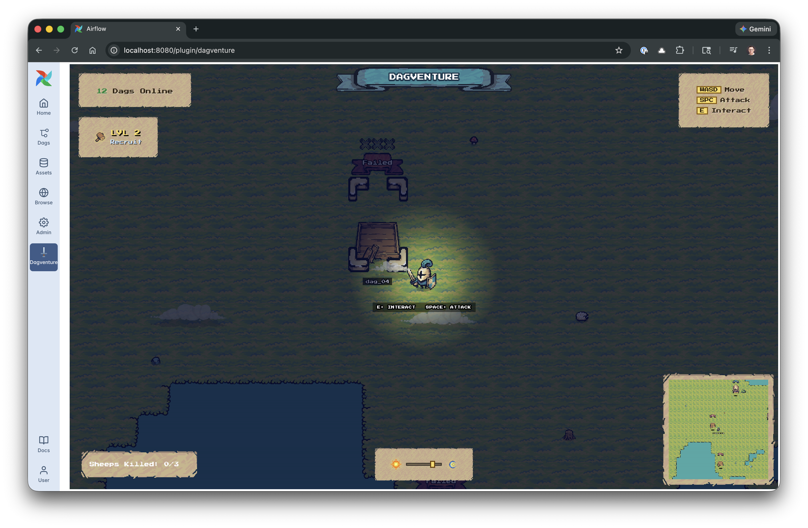

Airflow 3 lets plugins embed custom FastAPI apps directly into the UI. Dagventure is one such plugin: no extra server, no sidecar. Copy plugins/ and restart.
Every active Dag becomes a building on a living island. Color reflects real state: blue (success), yellow (running), red (failed), purple (paused). Refreshes every 10 seconds.
Running Dags spawn goblin workers. Interact to browse task instances and read live logs pulled directly from your Airflow API. Failed Dags can be deleted from the UI.
Works with Astronomer Astro and any Airflow 3 setup.
plugins/ to your projectastro dev restartYour Airflow 3 Dags are buildings.
An open-source Airflow 3 plugin that turns pipeline monitoring into a pixel-art adventure.

Install in 3 steps
plugins/ to your Airflow projectastro dev restart

Pixel art by Pixel Frog · Built with Airflow 3 & Phaser 3